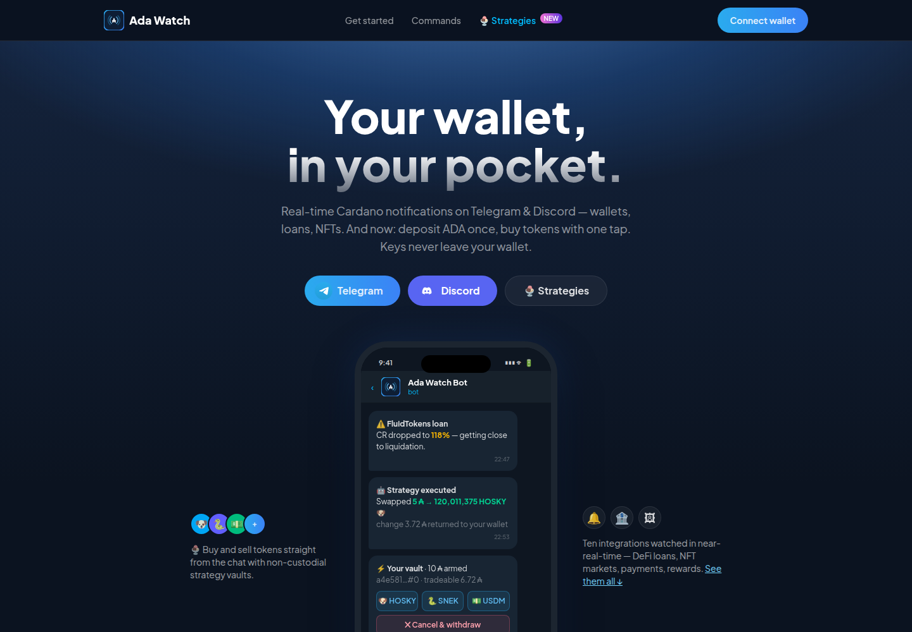
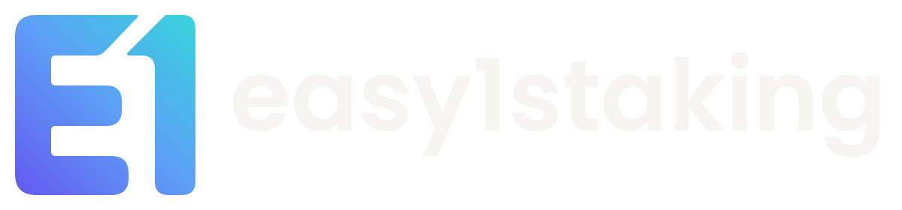
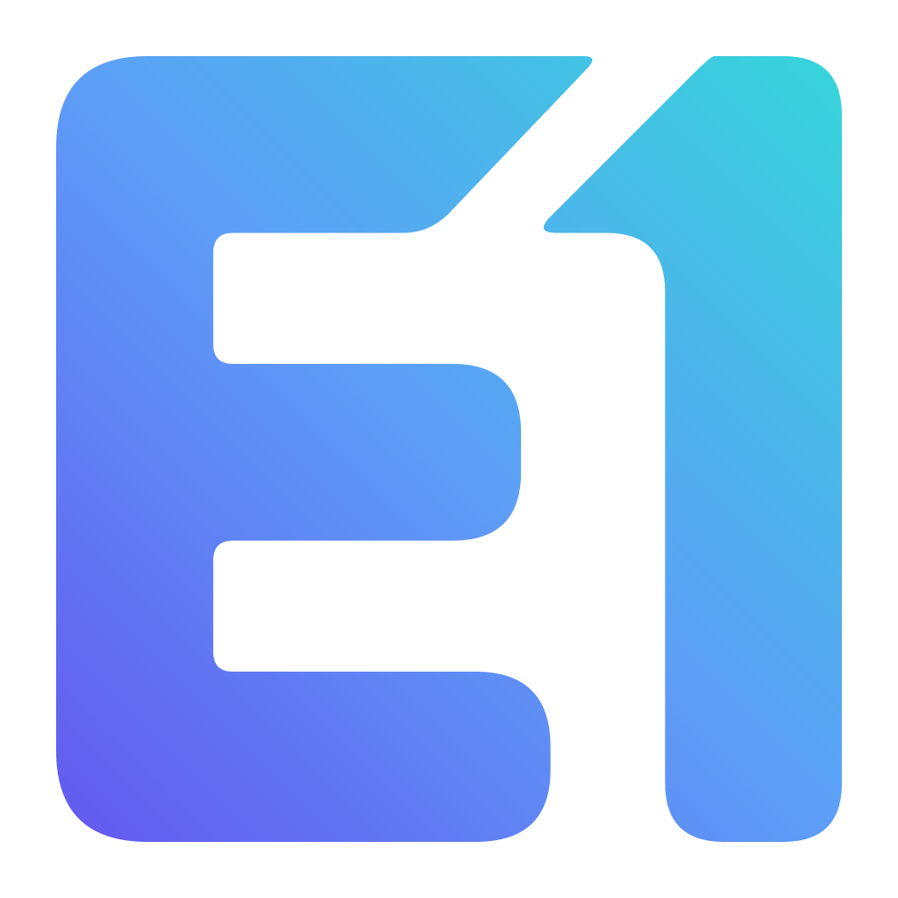
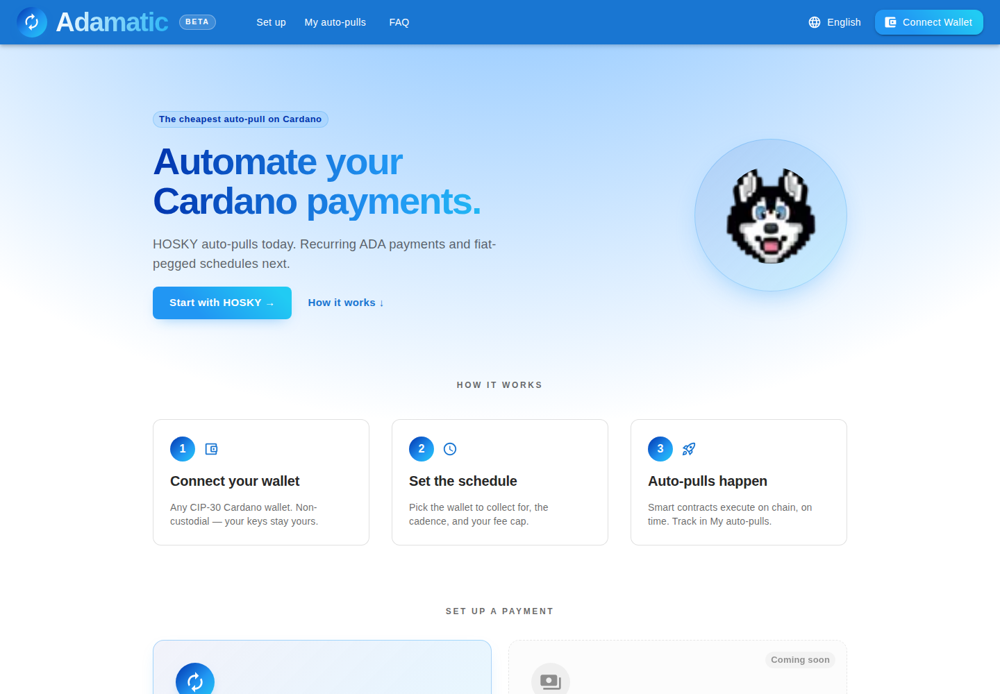
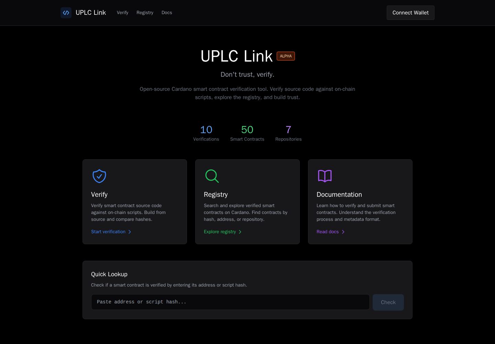
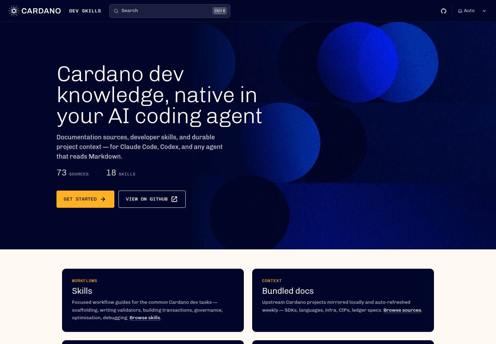

adawatchbot.xyz · site captureAdaWatch
Your Cardano activity, in your pocket. Wallet, DeFi and NFT notifications through Telegram and Discord.
Explore AdaWatch
Stake with EASY1I'm Giovanni. EASY1 brings together the tools I build, the smart contracts behind them, and the stake pool where it all started.
Explore the projects
Products I build.
Open-source work I've shared.

adawatchbot.xyz · site captureYour Cardano activity, in your pocket. Wallet, DeFi and NFT notifications through Telegram and Discord.
Explore AdaWatch
adamatic.xyz · site captureAutomate payments on Cardano. HOSKY auto-pulls are live; recurring ADA payments are on the roadmap.
Explore AdaMatic
uplc.link · site captureDon't trust. Verify. Compare Aiken source with on-chain scripts and explore verified Cardano contracts.
Explore UPLC Link
Cardano Foundation · official site captureCardano knowledge for AI coding agents. Skills, bundled documentation and workflows for Claude Code and Codex.
Explore Cardano Dev SkillsProjects and open-source work started by Giovanni · Connected by EASY1
EASY1 started with staking in 2020. Today, the pool sits alongside the Cardano software and smart contracts I build.
Stake with EASY1 Pool information and delegation, together in one place.Design placeholders. Live pool data will be shown here.
I started EASY1 as a staking platform. Then came the bots, payment automation and smart contracts. I also started Cardano Dev Skills and handed it over to the Cardano Foundation. Some projects I run; others I share with the wider ecosystem.
The story behind EASY1The story, the code,
and what I learned along the way.